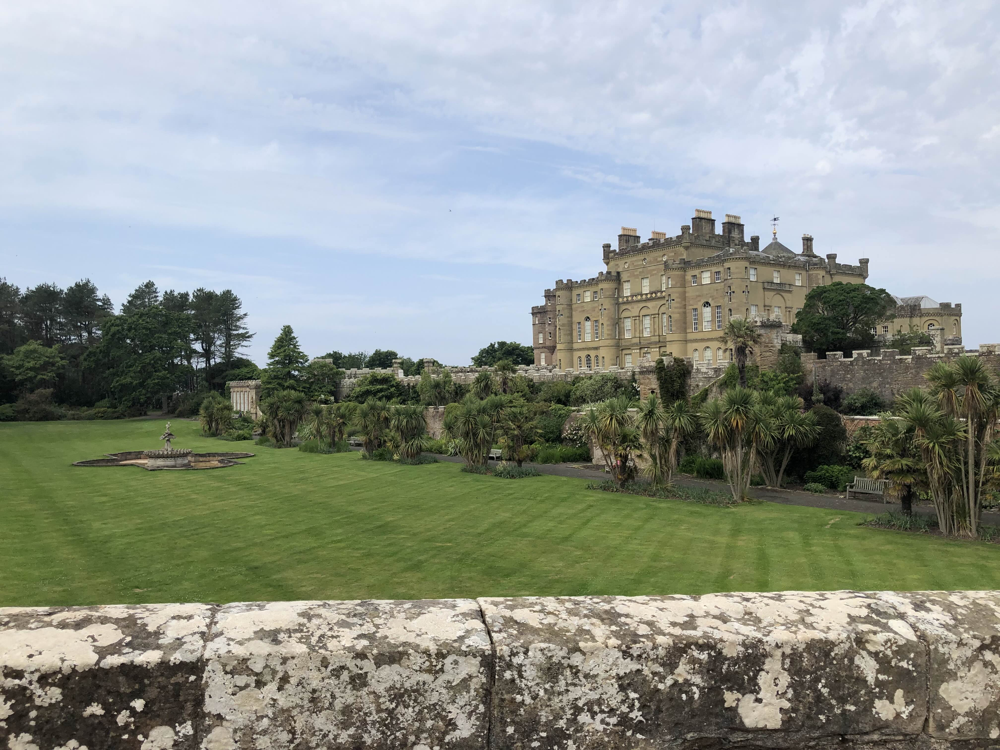
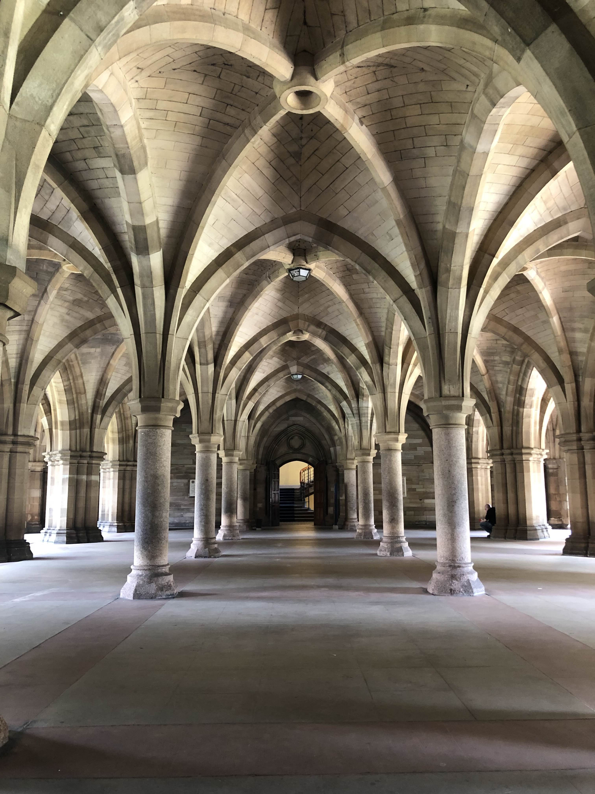
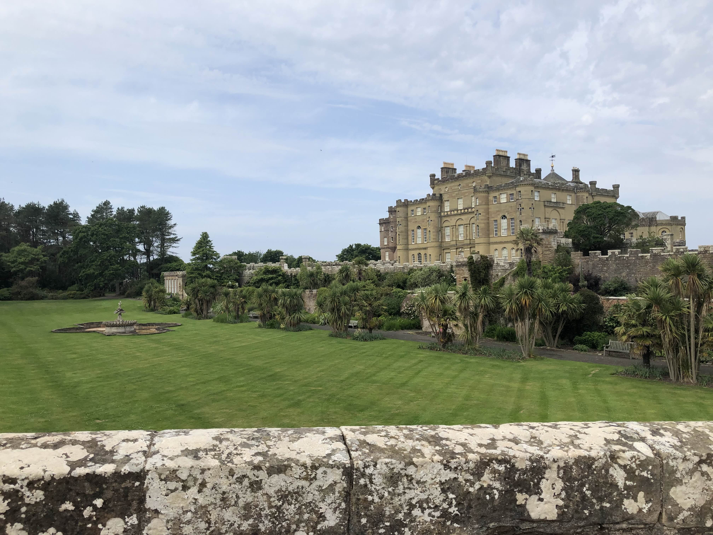
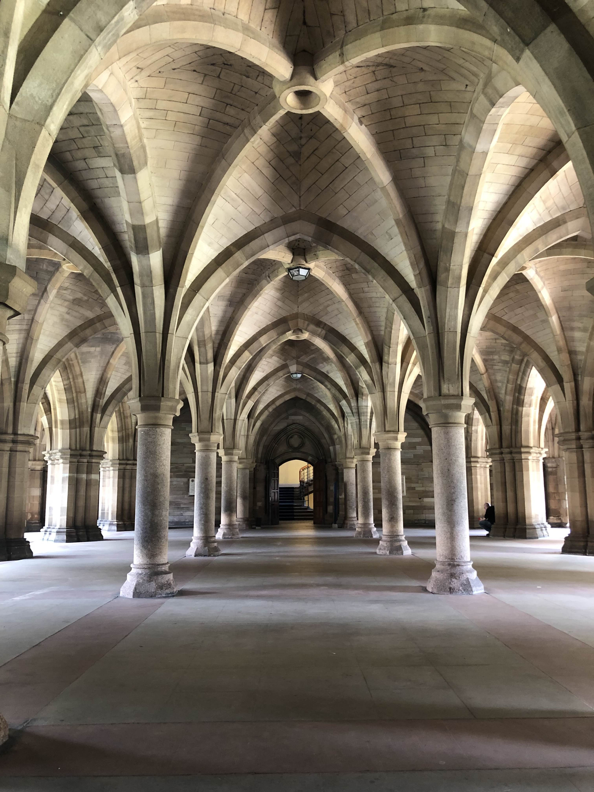

Projects / Activities
Summer 2025
Scotland!
This past summer I traveled to Scotland as part of the UCEAP Summer Physics Program at the University of Glasgow. One of my main reasons for going was to fulfill academic requirements, but also the opportunity to live and learn in a completely new country. Being abroad gave me the chance to experience a different culture through sightseeing, meeting new people, and forming new friendships with my class peers. I was especially interested in seeing how education and academic philosophy differed from what I was used to, and I learned about their emphasis on group-based learning and helping each other figure out problems instead of being told directly what the answer was.
 



Fall 2024
Ask Margot
Ask Margot was my team's assigned company during the Studio phase of Break Through Tech AI! Over 4 months, our group and TA worked together to design an AI model in Python that could match travel nurses to their preferred hospitals when looking for work. We experimented with filtering, NLP, supervised learning, and sentiment analysis to improve match relevance. We dealt with problems such as a cold start and initial matching, and considering a combination of filtering methods instead of just one. This project helped apply my learning from the first half of BTT into something tangible whilst working in a team and meeting regularly with our company representative!
MERN Stack Group Finder Project
This project involved building a full-stack group-finding web app for students using the MERN stack (MongoDB, Express, React, and Node). For the website, I helped create profiles, authenticate securely, and send requests to connect based on shared interests. I worked closely with a 4-person team using GitHub for version control and collaboration, which helped us maintain code quality and efficiently track bugs and feature updates throughout development, as well as rollback if we needed to.
Spring 2024
Break Through Tech AI (BTT)
In the first half of this program, I learned the fundamentals of AI/ML and practiced building and training regression and neural network models using Python. I was selected from over 3,000 applicants to participate in the Break Through Tech AI Program at UCLA, an experience that combined hands-on ML coursework taught by Cornell faculty with real-world projects (Ask Margot) and mentorship from industry professionals. This provided my foundation on AI/ML and my understanding of how ML is applied in industry. I received an eCornell certificate for finishing the course.
View Certificate
Winter 2023
BruinTour -- CS32 Final Project
This was a program that plans the best tour route around special points of interest using real map data. I used the A* algorithm to find the shortest path between points of interest and generated clear step-by-step instructions, like when to turn or what to say at each stop. I got hands-on experience parsing large datasets from OpenStreetMap, working with geographic coordinates, building data structures to manage location info, as well as practical experience with C++ and debugging code.
View on GitHubSummer 2022
AAA Auto Club Enterprises
This was my first real experience into a company just before my senior year of high school. I rotated through several departments, including automation, Agile development, and cybersecurity, which gave me a broad look at how different teams operate. I spent time shadowing senior employees and sitting in on meetings to better understand their day-to-day work, and the experience helped me build meaningful connections with mentors and peers.
View Presentation